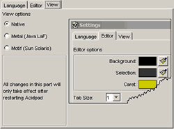
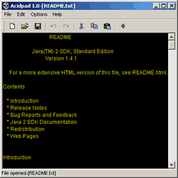
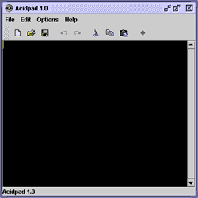
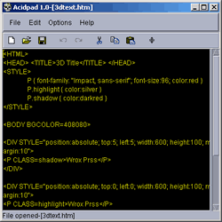

Интерфейс Acidpad

Пункт меню Настройки (Options) > Настройки (Settings). Здесь, на вкладке "Вид (View)" есть три переключателя, активизируя каждый из которых, Вы можете менять не только внешний вид, но и поведение программы. Заметьте, что для изменения внешнего вида необходимо перезагрузить Acidpad.
Такая странная особенность объясняется переносимостью программы. При выделенном пункте "Родной (Native)" в Windows или MacOS программа будет выглядеть как другие ("родные") программы, в Linux и других ОС, правда, будет применён пакет Java LaF (Metal), так как стандартных оболочек виртуальная машина Java может и не поддерживать. Если же выделен пункт "Metal" или "Motif", то соответственно будет применена оболочка Java LaF (Metal) или Sun Solaris (Motif).
Вы можете видеть разные настройки на следующих рисунках.


